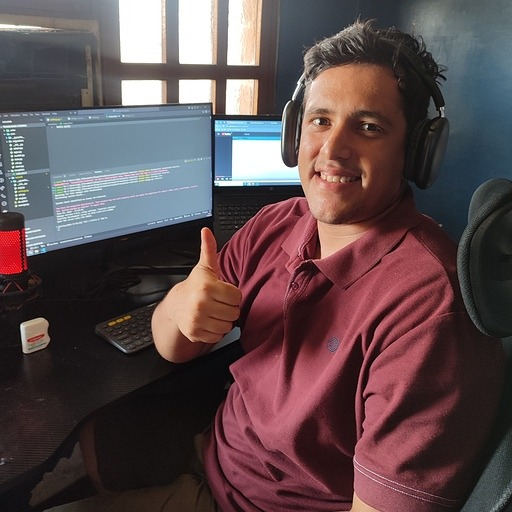

About Me
Get to know me, my journey, and what drives my passion for web development.

Who I Am
Hello! I'm Diego Granados, a web developer from Caracas, Venezuela. I'm currently pursuing my education at BYU-Pathway Worldwide, where I'm developing my skills in web development and software engineering.
My journey into web development started with a curiosity about how websites work. That curiosity quickly turned into a passion for creating digital experiences that are both beautiful and functional. I believe that good web development is about more than just writing code - it's about solving problems and creating value for users.
When I'm not coding, you can find me exploring new technologies, learning about design principles, or contributing to online developer communities. I'm always eager to take on new challenges and grow as a developer.
Technical Skills
Frontend Development
Backend & Tools
Design & Other
My Journey
Certifications
Want to Work Together?
I'm currently available for freelance work and open to new opportunities.
Contact Me